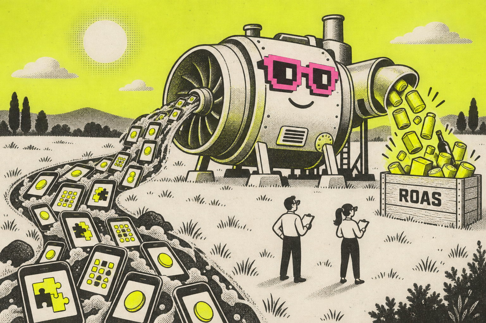
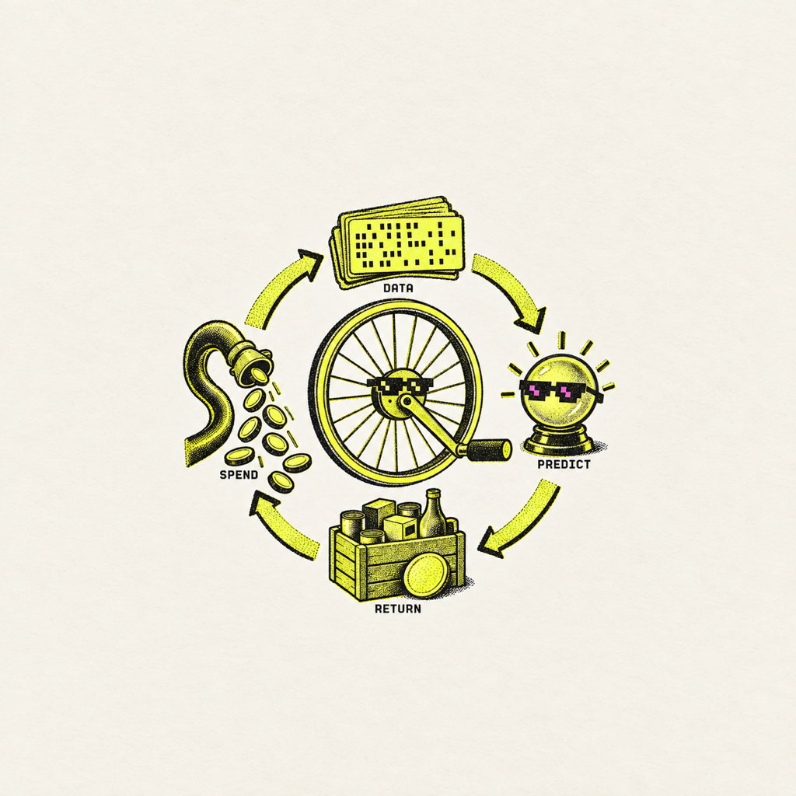
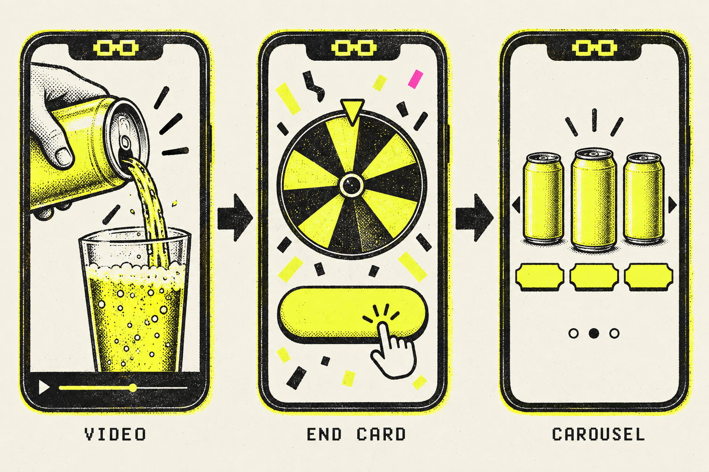
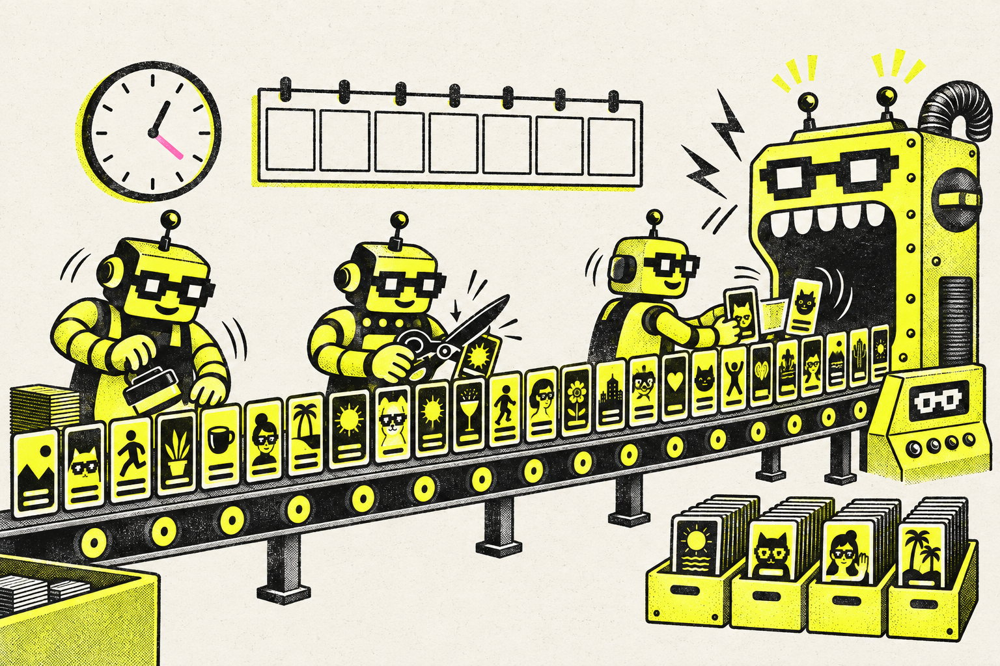
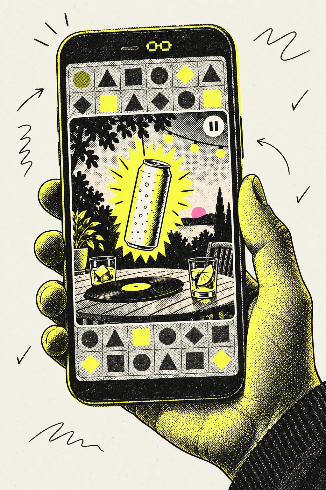

HOW AN AD ENGINE BUILDS YIELD FOR PRODUCTS AND SCALE
The yield engine.
Axon is a machine that turns attention inside mobile games into purchases for products it has never heard of. It does not ask who you are. It predicts what you will do next and bids on the moment. Here is how that yield gets built, what it costs to feed, and what a small regulated beverage brand learned running it for one summer.

People inside mobile games the engine can bid on, per AppLovin at the June 2026 opening.
Up 53% year over year. Adjusted EBITDA of $1.61B at an 84% margin.
While install volume fell 2%. The engine earns on prediction quality, not volume.
Any business can sign up. The revenue and spend gates that guarded the door are gone.
01 / THE CASE
A black box that buys moments, not people.
Axon is AppLovin's machine-learning decisioning engine. It sits inside the company's mediation layer and its own portfolio of games, and it evaluates ad impressions in real time: which ad to show, to which device, at what price. Since June 22, 2026 the storefront is called AppLovin Ads. The engine underneath is still Axon.
Axon 2.0 shipped in 2023 and the company has never explained its architecture. Asked for details in 2024, the CEO offered one sentence: it is “just better,” built for more scale and efficiency. Performance marketers stopped asking, because the results kept showing up in earnings.
What makes it a case worth studying is the business model it enables. Advertisers pick one of three buying contracts: a return on ad spend, a cost per purchaser, or a cost per lead. Everything else, including audiences, placements, bids and pacing, is the machine's job. You bring a signal and a supply of creative. It brings a billion daily players and a prediction.
02 / HOW YIELD IS BUILT
Five mechanisms, one flywheel.
Yield here means dollars of product sold per dollar of media bought. Axon builds it out of prediction on one side and your feedstock on the other. Remove either and the flywheel stops.

- 01
Prediction replaces targeting.
There are no interest graphs or uploaded audiences for e-commerce acquisition. The model reads contextual and behavioral signals across the network and hunts for devices that look like your buyers. Reported throughput is on the order of millions of auctions per second.
- 02
The deep-funnel signal is the fuel.
Purchases with real order values, sent through the pixel and a server-side conversions call with a shared dedupe id, are what the model learns from. Advertisers who fire “purchase” before payment, or with the value set to one, are feeding the engine sand.
- 03
The ad unit is a funnel, not a banner.
A vertical video, then an interactive end card, then a product carousel. Practitioner guides attribute roughly half of click-through to the end card and a median 25% day-zero return lift to the carousel. The creative is the landing page.
- 04
The engine is paid for prediction, not volume.
AppLovin's own numbers make the point: install volume down 2%, net revenue per install up 58% in the same quarter. Yield compounds when predictions improve; it does not need more impressions to grow.
- 05
Creative is the feedstock, and it decays.
The machine tires of a concept. Operators report needing five to seven new concepts a week, thirty-plus videos and ten-plus end cards at full scale, all captioned because playback is muted. Lift a Meta ad over unchanged and it underperforms on both platforms.

03 / HOW SCALE IS BUILT
Open the door, automate the feedstock, sell three contracts.
Yield for one advertiser is a model problem. Scale for the platform is a product problem. AppLovin's 2026 moves read like a ladder.
More than a billion daily players, reached through mediation and first-party studios, targeted contextually rather than by device identifier. The supply was built for gaming advertisers over a decade and is now rented to everyone.
A GA4-style pixel, a server-side event endpoint keyed on a dedupe id, and a Shopify app that fires on paid orders. The point is to get honest purchase values into the model in the first week.
A referral-only self-serve beta opened in October 2025. On June 22, 2026 the revenue and daily-spend requirements were dropped and any business could sign up. Consumer-vertical spend hit a record 28% above the prior holiday peak in a seasonally slow quarter.
An interactive end-card generator went to all accounts in early 2026. A video generator was in final testing by the May call. The CEO's own caveat: “We're not at the point where we can get a high-quality 30-60 second video out of the box.”
Return on ad spend, cost per purchaser, or cost per lead. The buying model is the whole interface. Everything a media buyer used to tune is hidden behind it.
“Advertisers haven't reached their maximum amount of spend for the return they're getting.”
Adam Foroughi, Q2 2026 earnings call. Translation: the ceiling on scale is the advertiser's feedstock, not the engine's reach.

04 / THE DOUBT
Whose number is it?
A yield engine that grades its own homework deserves a second grader. Three things kept us honest.
The dashboard is click-only and conservative. Third-party tools are generous. Holdouts are brutal.
One published beverage case showed 1.25x on the AppLovin dashboard, 4.77x in a third-party attribution tool, and no measurable lift in a geo holdout. All three numbers were “true.” Only one of them was money.
Mean and median disagree.
A measurement vendor's benchmark put Axon at 1.7x Meta's efficiency on average and 0.9x at the median. A few accounts win enormously; the typical account is roughly even. Which one are you?
The model does not improve on schedule.
Q2 2026 grew only 4% sequentially and management said model improvement was “lighter than normal.” The stock fell 16% on the day. The engine is a research program with a revenue line attached.
05 / FIELD NOTE · GOOD FEELS, MAY–SEPTEMBER 2026
A seltzer brand feeds the machine.
Good Feels makes hemp-derived THC seltzers and gummies in Medway, Massachusetts. It is a restricted category with liquid-weight margins, an age gate, and a short list of states it can ship to. In other words, the hardest kind of feedstock. The team opened an Axon account at the end of May and spent the summer learning what the engine actually wants.
- MAY 29Account opens with a $5,000 credit on offer
Spend five thousand in sixty days and the credit lands. The founder's first question on the thread: “It requires videos. Do you have examples of successful videos? Do you know where these run?”
- JUNE 25The launch playbook
AppLovin's CEO session reiterated the one rule: constant creative. The growth manager's note back to the team: people see eight to ten ads before converting, so a single ad's return understates the channel.
- JULY 16Credit unlocked
First five thousand spent. The channel was now the largest paid line on the brand's media ledger, roughly three of every four paid dollars by late summer.
- AUGUST 15The feedstock runs thin
One editor produced about five re-cut videos a week. Managing the account had taken over the growth manager's calendar. A co-founder asked the right question: “If AppLovin is doing all of the optimizations and we just have to feed it creative, shouldn't we be looking at creative agencies instead?”
- AUGUST 21A Friday experiment
Ten 9:16 boards, each built around one grown-up moment and one real can — FRIDAY, PATIO, TAKEOUT, DINNER, VINYL, POUR, VARIETY, DOSE, SELTZER, GOOD FEELS — generated in an evening with an image model, then rebuilt as a ten-ad handoff set with the legal bar in every frame and a preflight list for the humans.
- SEPTEMBERA specialist, on a leash
The controller negotiated a month-to-month manager with a written spend ceiling, a margin-true return threshold, and the AppLovin dashboard as the single system of record. The ask was not more optimization. It was more feedstock: interactives, end cards, and someone whose week is the channel.

FIELD LEDGERAPPLOVIN DASHBOARD · ROUNDED
- Click-through
- Above 4%, higher than both case studies the agency pitched with
- Cost per click
- Around a dollar
- Day-7 return, July
- Above 1x
- Trailing 30-day return, September
- Below 1x as fresh creative thinned
- Share of paid media
- ~¾ of paid spend
- Blended MER, all channels
- ~3x
Yield tracked the feedstock, not the budget. When new concepts stopped arriving weekly, the return on the same spend fell. That is the whole case study in one row.
06 / THE CHANGE · A YIELD CHECKLIST FOR PRODUCT TEAMS
Rent the engine. Own the feedstock.
Seven rules we would hand to any product team about to open an account. None of them are about bidding.
- 01
Yield = prediction × feedstock.
You cannot improve the first factor. Budget your people and your money against the second.
- 02
Wire the signal before the first dollar.
Pixel plus server-side events, one dedupe id per order, fired on paid orders, with currency and real values. Test with a real purchase.
- 03
Build a supply chain, not a campaign.
Boards from an image model, cuts from a video generator, captions and claims from a human, a legal bar in every frame. Five to seven concepts a week is the price of admission.
- 04
Leave it alone for seven days.
Edits reset learning. Batch changes. Scale 30 to 40% every two or three days once the learning window closes.
- 05
Pick the system of record and the margin-true threshold in writing.
A supplement brand can scale at 1.3x. A seltzer with liquid-weight shipping cannot. Know your own number before an agency shows you theirs.
- 06
Run a holdout at the spend you intend to run.
Fourteen to twenty-one days, treatment and control states. Results move with budget, so test at the real level.
- 07
If you are restricted, design for review.
Age gate, disclaimer, state list, and no mascots. Build concepts around what will be approved rather than appealing what will not.
07 / THE INDUSTRY NEXT READ
The scarce input is not audience. It is throughput and honesty.
Every previous ad platform sold access to people: an audience, an interest graph, a keyword. Axon sells access to a prediction, and predictions are only as good as what you feed them. That inverts the job of a product team. You are no longer buying reach. You are running a small factory that turns your product into thirty captioned stories a week and a clean purchase signal, and renting a machine to place them.
The yield is real. AppLovin's earnings say so, and one summer of a hard category says so in miniature. But the yield is rented, and it is rented by the week. The moment the feedstock thins, the engine keeps spending and the return goes home. Scale, for the platform, came from opening the door and automating the parts of feedstock that humans are slow at. Scale, for the advertiser, will come from the same place.
Axon does not need to know your product. It needs you to keep describing it, thirty ways a week, and to tell it the truth about who bought.
08 / SOURCE LEDGER
Public numbers first. Our receipts second.
Boundary. This case study does not claim incrementality for Good Feels, does not publish the brand's spend or revenue, and does not endorse any agency. Public figures are attributed; anything marked reported is unverified by us. Restricted-category compliance is a legal matter, not a creative detail.